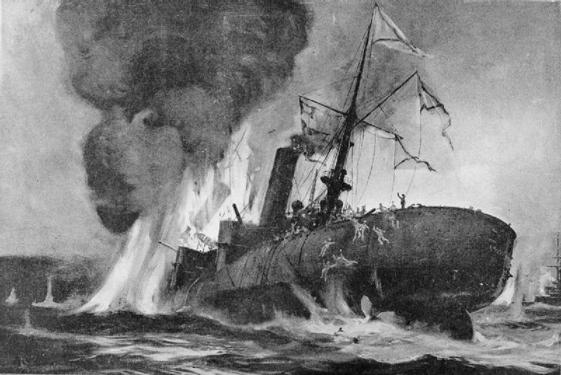
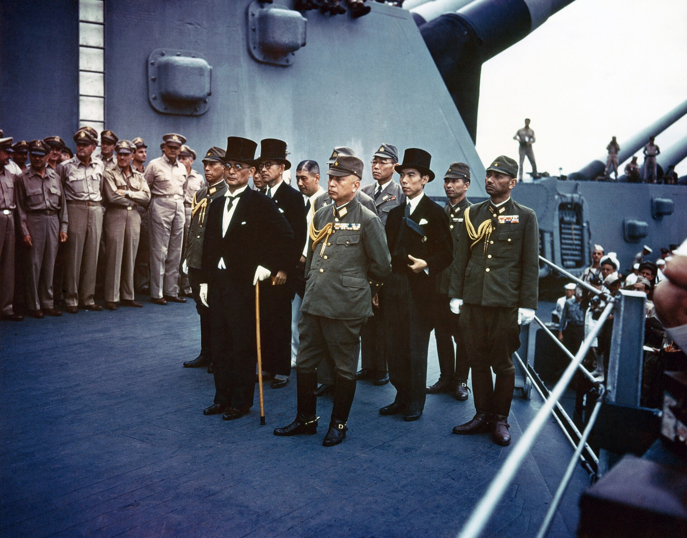

Überblick
Die Epoche Meiji–1945 (1868–1945) umfasst den Übergang Japans vom frühneuzeitlichen Tokugawa-Staat zu einem zentralisierten Nationalstaat, dessen Industrialisierung, Verfassungsordnung und imperialer Expansion in den Pazifikkrieg und die Kapitulation von 1945 mündeten. Mit der Meiji-Restauration wurde die Herrschaft symbolisch und praktisch auf den Kaiserhof zurückgeführt; in der Realität regierte eine Oligarchie aus ehemaligen Domäneneliten (vor allem Satsuma und Chōshū), die Modernisierung, Wehrpflicht und Revision der ungleichen Verträge vorantrieb.
Charakteristisch sind der Aufbau eines modernen Beamten- und Militärstaats, rasche Industrialisierung und Infrastruktur, Siege über China (1894–1895) und Russland (1904–1905), die Annexion Koreas (1910), eine kurze Phase parlamentarischer Öffnung in der Taishō-Zeit sowie der Aufstieg des Militärischen in den 1930er Jahren. Expansion in die Mandschurei (1931), der Zweite Japanisch-Chinesische Krieg (ab 1937) und der Krieg gegen die Alliierten im Pazifik (1941–1945) endeten mit atomaren Bombardierungen und der bedingungslosen Kapitulation. Die Epoche ist zugleich Geschichte staatlicher Modernisierung und kolonialer Gewalt; sie ist ohne Verharmlosung der Kriegsverbrechen und ohne heroische Überhöhung zu beschreiben.
Datierungen folgen Konvention: 1868 als Beginn (Kaiserliche Restauration / Meiji), 1945 als Ende (Kapitulation und Besatzung). Manche Darstellungen betonen 1889 (Verfassung) oder 1895 (Aufstieg zur Regionalmacht) als Zäsuren; intern markieren 1912 (Ende Meiji / Beginn Taishō) und 1926 (Beginn Shōwa) Periodenwechsel. Gemeinsamer roter Faden ist die Transformation eines halbkolonial bedrängten Inselreichs in eine Großmacht und deren Zusammenbruch unter den Folgen von Militarismus und totalem Krieg.
Akteure
- Kaiser Meiji (Mutsuhito, 1852–1912): Symbol der Restauration und der nationalen Einheit; politisch wenig individueller Entscheider, aber zentrale Legitimationsfigur der Oligarchie.
- Meiji-Oligarchen (genrō): u. a. Ōkubo Toshimichi, Saigō Takamori, Kido Takayoshi, Itō Hirobumi, Yamagata Aritomo, Matsukata Masayoshi; prägten Verfassung, Heer, Finanzen und Außenpolitik.
- Itō Hirobumi (1841–1909): Leitfigur der Verfassungsarbeit (1889); mehrfach Premierminister; später Generalresident in Korea, 1909 in Harbin ermordet.
- Kaiser Taishō (Yoshihito, 1879–1926) und Kaiser Shōwa (Hirohito, 1901–1989): Träger der konstitutionellen Monarchie; Hirohitos Rolle im Krieg bleibt in der Forschung differenziert und umstritten (symbolische vs. aktive Verantwortung).
- Parteipolitiker der Taishō-/frühen Shōwa-Zeit: u. a. Hara Takashi, Katō Takaaki; Träger einer begrenzten „Taishō-Demokratie“.
- Militärführung: Armee und Marine mit eigenständigen Machtbasen; in den 1930er Jahren zunehmend dominant (u. a. Tōjō Hideki als Premierminister 1941–1944).
- Zaibatsu: große Familienkonzerne (Mitsui, Mitsubishi, Sumitomo, Yasuda u. a.), eng verwoben mit Staat und Rüstung.
- Kolonialverwaltungen und besetzte Bevölkerungen: Korea, Taiwan, Mandschurei (Manchukuo), später weitere Gebiete in China und Südostasien; Opfer von Annexion, Zwangsarbeit und Kriegsgewalt.
- Alliierte Gegner ab 1941: vor allem USA, Großbritannien, China, Niederlande, später die Sowjetunion (August 1945).
Was geschah
Meiji-Restauration und Modernisierung
1868 proklamierten restaurative Kräfte die Rückkehr der Herrschaft an den Kaiser (ōsei fukko). Der Fünf-Artikel-Eid (gokajō no goseimon, Charter Oath) vom April 1868 skizzierte Beratungsorgane, Einheit der Nation, Bruch mit „üblen Gebräuchen“ der Vergangenheit, Orientierung an Wissen der Welt und Beteiligung breiterer Schichten an Entscheidungen; er war Programm und Propaganda zugleich. Der Boshin-Krieg (1868–1869) beendete den bewaffneten Widerstand der Tokugawa-Loyalisten. Die Hauptstadt verlagerte sich nach Tōkyō (vormals Edo).
1871 wurden die Domänen (han) abgeschafft und in Präfekturen umgewandelt (haihan chiken); damit entstand ein einheitlicher Territorialstaat. Standesprivilegien der Samurai wurden schrittweise beseitigt (u. a. Schwertverbot, Pensionsablösung); die Wehrpflicht (1873) und ein modernes Heer nach preußisch-französischem Vorbild ersetzten die Kriegerkaste. Der Satsuma-Aufstand unter Saigō Takamori (1877) war die letzte große Samurai-Rebellion und endete mit der Niederlage der Aufständischen.
Wirtschaftlich und infrastrukturell folgten Eisenbahnen, Telegrafie, Werften, Bergbau, Textilindustrie und ein Bankensystem; der Staat förderte „Musterbetriebe“, die später oft privatisiert wurden. Bildungspflicht und ein nationales Schulwesen erhöhten Literalität und staatliche Integration. Außenpolitisch strebte Japan die Revision der ungleichen Verträge an und übernahm westliche Rechtskodizes. Die Meiji-Verfassung von 1889 (in Kraft 1890) schuf einen konstitutionellen Rahmen mit Kaiser als Souverän, Reichstag (gewähltes Unterhaus und adliges Oberhaus) und starken Vorrechten von Exekutive und Militär: Die Minister waren dem Kaiser verantwortlich, nicht dem Parlament; Heer und Marine berichteten oft direkt an den Thron (tōsuiken). Das System war modern und autoritär zugleich: Parteien und Presse wuchsen, ohne dass eine volle parlamentarische Souveränität entstand.
Imperialismus und Kriege bis 1918

Ab den 1870er Jahren mischte sich Japan in die koreanische Frage ein und sicherte sich 1879 die formale Eingliederung der Ryūkyū-Inseln. Der Erste Japanisch-Chinesische Krieg (1894–1895) um Einfluss in Korea endete mit japanischem Sieg; der Vertrag von Shimonoseki brachte Taiwan, die Pescadores und zunächst die Liaodong-Halbinsel sowie eine hohe Entschädigung. Die Intervention Russlands, Deutschlands und Frankreichs (Triple-Intervention) erzwang die Rückgabe Liaodongs und verstärkte in Japan das Gefühl, von den Großmächten benachteiligt zu werden. Der Russisch-Japanische Krieg (1904–1905) um Mandschurei und Korea endete nach schweren Verlusten mit japanischem Erfolg (u. a. Port Arthur, Tsushima); der Vertrag von Portsmouth (1905) bestätigte japanische Vorherrschaft in Korea und Rechte in Südmandschurei. 1910 folgte die Annexion Koreas: koloniale Herrschaft mit Sprach- und Kulturpolitik, Landnahme und Unterdrückung von Widerstand; die Erinnerung daran ist in Korea und Japan bis heute politisch sensibel.
Im Ersten Weltkrieg schloss sich Japan der Entente an, eroberte deutsche Besitzungen in China (Kiautschou/Qingdao) und im Pazifik und präsentierte China 1915 die „Einundzwanzig Forderungen“. Auf der Pariser Friedenskonferenz und im Völkerbund festigte Japan den Status einer Großmacht, stieß aber bei der Rassengleichheitsklausel auf Widerstand der westlichen Mächte. Wirtschaftlich profitierte Japan von Kriegsaufträgen; sozial wuchsen Arbeiterbewegung und Protest (u. a. Reisunruhen 1918).
Taishō und frühe Shōwa
Die Taishō-Zeit (1912–1926) gilt als Phase relativer politischer Öffnung: Parteienkabinette, erweitertes Wahlrecht (1925 allgemeines Männerwahlrecht) und eine lebendige städtische Moderne („Taishō-Demokratie“). Die Öffnung blieb begrenzt: Frauen ohne nationales Wahlrecht, starke Bürokratie, genrō-Einfluss und das Militär als Vetomacht. Das Kantō-Erdbeben 1923, wirtschaftliche Erschütterungen und die Weltwirtschaftskrise ab 1929 schwächten liberale Kräfte. Attentate und Putschversuche (u. a. 1932, Februar 1936) radikalisierten die Politik. In der frühen Shōwa-Zeit (ab 1926) setzte sich eine Ideologie von Kaiserzentralismus, Antikommunismus und „asiatischer“ Mission durch, die Expansion rechtfertigte. Pressezensur, Sondergerichtsbarkeit gegen Linke und die wachsende Autonomie der Truppenkommandeure in China untergruben zivile Kontrolle. Zugleich blieben städtische Massenkultur, Konsum und Wissenschaft lebendig; die politische Liberalisierung der 1920er Jahre erwies sich jedoch als reversibel.
Expansion, Weltkrieg und Kapitulation

1931 inszenierte die Kwantung-Armee den Mukden-Zwischenfall und besetzte die Mandschurei; 1932 entstand der Marionettenstaat Manchukuo. Der Völkerbund verurteilte die Aggression; Japan trat 1933 aus. Ab 1937 eskalierte der Zweite Japanisch-Chinesische Krieg nach dem Zwischenfall an der Marco-Polo-Brücke zu einem vollständigen Krieg gegen die Republik China. Die Einnahme Nanjings (Nanking) Ende 1937 / Anfang 1938 war von massenhaften Tötungen und Vergewaltigungen begleitet; das Ausmaß wird in der Forschung diskutiert, die Historizität schwerer Kriegsverbrechen ist durch Zeugen, Dokumente und internationale Tribunalakten gut belegt (vgl. u. a. Berichte und spätere Urteile; Überblick: Encyclopaedia Britannica, „Nanjing Massacre“). In den besetzten Gebieten und im Kriegsverlauf kam es zu Zwangsarbeit und zum System der sogenannten „Trostfrauen“ (ianfu): sexuelle Zwangsknechtschaft vor allem von Frauen aus Korea, China und anderen Gebieten. Zahlen, Rekrutierungsformen und staatliche Verantwortung sind Gegenstand anhaltender historiografischer und politischer Kontroversen; die Existenz systematischer sexueller Ausbeutung unter militärischem Kontext ist durch Dokumente und Opferzeugnisse substantiiert (Überblicke u. a. bei UN- und Forschungszusammenfassungen sowie in Standardwerken zur Kriegsgeschichte).
Allianzen mit dem nationalsozialistischen Deutschland und dem faschistischen Italien (Achse) sowie der Vormarsch in Südostasien verschärften den Konflikt mit den USA und Großbritannien. Am 7. Dezember 1941 (Ortszeit Hawaii) griff Japan Pearl Harbor an und eröffnete den Pazifikkrieg; rasche Eroberungen (Philippinen, Malaya, Niederländisch-Indien u. a.) folgten, danach Wende nach Midway (1942), Inselkämpfen und strategischen Bombenangriffen auf japanische Städte. Im August 1945 warfen die USA Atombomben auf Hiroshima (6.) und Nagasaki (9.); die Sowjetunion trat in den Krieg gegen Japan ein. Am 15. August verkündete Kaiser Hirohito die Annahme der Potsdamer Bedingungen; die formelle Kapitulation folgte am 2. September 1945. Die alliierte Besatzung unter US-Führung leitete Demilitarisierung, Demokratisierung und eine neue Verfassung (1947) ein; damit endet diese Epoche und beginnt die Nachkriegsordnung.
Beginn
Der Beginn liegt in der Meiji-Restauration von 1868: der Proklamation kaiserlicher Herrschaft, dem Charter Oath und dem Sieg über die Tokugawa im Boshin-Krieg. Entscheidend war nicht nur der Dynastiewechsel der Exekutive, sondern der Aufbau neuer Institutionen: Abschaffung der han, Wehrpflicht, industrielle Förderung, Rechts- und Bildungskodizes und die Verfassung von 1889. Japan trat aus der defensiven Krise der bakumatsu-Zeit in eine offensive Modernisierungs- und Großmachtpolitik ein. Die Epoche beginnt somit als Staatsgründung unter kaiserlicher Symbolik und oligarchischer Führung, mit dem expliziten Ziel, den westlichen Mächten ebenbürtig zu werden und die ungleichen Verträge zu revidieren.
Ende / Übergang
Das Ende markieren Kapitulation und Besatzung 1945. Militärische Niederlage, atomare Zerstörung und sowjetischer Kriegseintritt erzwangen die Annahme der alliierten Bedingungen. Das Kaiserliche Japan als Großmacht und Kolonialreich hörte auf zu bestehen; Korea, Taiwan und weitere Gebiete gingen aus japanischer Kontrolle. Die Besatzungsreformen (Demilitarisierung, Landreform, Gewerkschaften, Frauenwahlrecht, Verfassung von 1947 mit Pazifismusklausel Artikel 9) transformierten das politische System. Kontinuitäten blieben in Bürokratie, Wirtschaftseliten und Alltagskultur; der Bruch in Militär, Imperium und Staatsideologie war gleichwohl tief. Die Erinnerung an Expansion und Kriegsverbrechen blieb und bleibt Gegenstand innen- und außenpolitischer Debatten in Ostasien. Mit 1945 geht die Epoche des imperialen Nationalstaats in die vom Kalten Krieg geprägte Nachkriegsdemokratie über.
Quellen
- Encyclopaedia Britannica – „Meiji Restoration“: https://www.britannica.com/event/Meiji-Restoration
- Encyclopaedia Britannica – „Charter Oath“: https://www.britannica.com/event/Charter-Oath
- Encyclopaedia Britannica – „Constitution of the Empire of Japan“: https://www.britannica.com/topic/Constitution-of-the-Empire-of-Japan
- Encyclopaedia Britannica – „First Sino-Japanese War“: https://www.britannica.com/event/First-Sino-Japanese-War-1894-1895
- Encyclopaedia Britannica – „Russo-Japanese War“: https://www.britannica.com/event/Russo-Japanese-War
- Encyclopaedia Britannica – „Japan: The emergence of imperial Japan“: https://www.britannica.com/place/Japan/The-emergence-of-imperial-Japan
- Encyclopaedia Britannica – „Taishō period“: https://www.britannica.com/event/Taisho-period
- Encyclopaedia Britannica – „Manchukuo“: https://www.britannica.com/place/Manchukuo
- Encyclopaedia Britannica – „Second Sino-Japanese War“: https://www.britannica.com/event/Second-Sino-Japanese-War
- Encyclopaedia Britannica – „Nanjing Massacre“: https://www.britannica.com/event/Nanjing-Massacre
- Encyclopaedia Britannica – „Pearl Harbor attack“: https://www.britannica.com/event/Pearl-Harbor-attack
- Encyclopaedia Britannica – „World War II: The war in the Pacific“: https://www.britannica.com/event/World-War-II/The-war-in-the-Pacific
- Encyclopaedia Britannica – „atomic bombings of Hiroshima and Nagasaki“: https://www.britannica.com/event/atomic-bombings-of-Hiroshima-and-Nagasaki
- National Diet Library (Japan) – Modern Japan in archives: https://www.ndl.go.jp/modern/e/
- Asia for Educators (Columbia University) – „Japan: 1868–1945“ / modern Japan materials: https://afe.easia.columbia.edu/timelines/japan_timeline.htm
- Asia for Educators (Columbia University) – „The Meiji Restoration and Modernization“: https://afe.easia.columbia.edu/special/japan_1750_meiji.htm
- United States Holocaust Memorial Museum – „Japan in World War II“ (overview context): https://encyclopedia.ushmm.org/content/en/article/japan-in-world-war-ii
- Encyclopaedia Britannica – „comfort women“: https://www.britannica.com/topic/comfort-women
- Cambridge University Press – The Cambridge History of Japan, Vol. 5 (The Nineteenth Century) / Vol. 6 (The Twentieth Century): https://www.cambridge.org/gb/universitypress/subjects/history/series/cambridge-history-japan
- National Archives (USA) – Japan surrender / WWII Pacific records (overview pathway): https://www.archives.gov/research/military/ww2